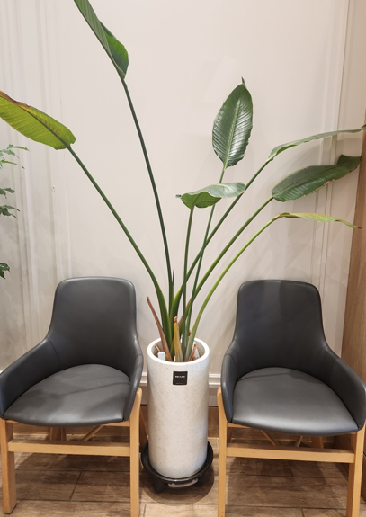

초등5학년 아동은 학교에서 산만하고 또래와 어울리지 못하여 스트레스가 높음. 키가 또래보다 월등히 작아서 매일 성장촉진제를 맞고 있는 신체적 특징이 있으며, 학습능력이 낮아서 같이 게임하거나 협동놀이에 참여하지 안하고 혼자 돌아다님. 아동은 부모와 함께 수면하고 중학생 언니와 오빠와 거리감을 나타냄. 언니는 부모가 남동생과 막내에게 관심이 높다고 불만을 나타내고, 오빠는 아들을 선호하면서 막내동생을 사랑한다는 느낌에 자주 여동생에게 치근덕 거리기를 자주 함.
이에 내담자 막내는 언니와 상대를 안하고, 오빠와는 장난치듯 매일 다투면서 크게 소리지르고 울면서 자기중심적, 충동성을 발휘하면서 엄마아빠에게 의존함. 부모는 막내딸에 대한 측은지심으로 과잉보호하기 때문에 부부싸움이 증가하고, 가족 분위기는 늘 냉랭하고 안정감이 없어서 걱정하고 고민함.

1. 아동에게 나타날 수 있는 일반적인 특징
1) 주의력 문제
산만함은 주의력 결핍 장애(ADHD)와 연관이 있을 수 있다. 이 경우 수업 중 집중을 지속하기 어렵고, 충동적인 행동을 보일 수 있다. 그러나 ADHD가 아니더라도, 여러 가지 다른 이유로 인해 주의력이 부족할 수 있다.
2) 사회적 기술 부족
또래와 잘 어울리지 못하는 경우, 사회적 기술 부족일 수 있다. 다른 아이들과 의사소통을 원활하게 하지 못하거나, 대인관계에서 부적절한 행동을 보일 수 있다. 특히 갈등 해결 능력이 부족하거나, 다른 사람의 감정을 읽는 상호작용 능력이 떨어지는 경우도 있을 수 있다.
3) 정서적 불안정
아동의 산만함과 또래와의 불화는 정서적 불안정에서 기인할 수 있다. 이 나이대 아동들은 자아정체성을 형성하는 과정에서 혼란을 겪을 수 있으며, 이러한 혼란이 정서적으로 불안하게 만들 수 있다. 스트레스, 불안, 우울 등의 감정적 어려움이 있는 경우, 그 결과로 산만함이 나타날 수 있다.
4) 학교 부적응
아동이 학교 환경에서 어려움을 겪고 있을 수도 있다. 학업 성취도가 떨어지거나, 학업 부담이 과도하게 느껴지는 경우 열등감과 불안감으로 산만하거나 또래와 어울리지 못하는 방식으로 반응할 수 있다.
5) 성격 및 기질
내향적이거나 감정 표현이 서툰 경우, 소외감이 증가된다. 또래와의 상호작용에서 어려움을 겪을 수 있다. 또한, 민감한 성향 아동들은 학교의 규칙, 또래 압박, 혹은 예상치 못한 상황에 스트레스를 더 쉽게 받을 수 있다.
6) 가족 및 환경적 요인
가족 내 변화(부모의 다툼 및 이혼, 형제 자매와의 관계, 가정 내 갈등 요소 등)나 스트레스는 아동의 학교생활과 사회적 상호작용에 영향을 부정적으로 미칠 수 있다.
2. 개입 방법 및 고려사항
1) 심리 평가
ADHD, 정서적 문제, 혹은 학습 장애 등의 가능성을 확인하기 위해 전문적인 심리 평가를 고려한다.
2) 사회성 훈련
또래와의 상호작용 능력을 향상시키기 위한 사회성 기술 훈련이나 그룹 활동에 참여시키우도록 한다.
3) 정서 지원
정서적 상태를 이해하고, 불안이나 스트레스에 대한 지원을 제공할 수 있는 상담이나 놀이 치료가 필요하다.
4) 학교와의 협력
교사와의 협력을 통해 아동의 학교 생활에서의 어려움을 파악하고, 학습이나 대인관계에서의 지원을 받는다.
5) 가정 내 지원
가정에서의 부모-자녀 관계와 양육 태도를 찾아보고, 아동에게 정서적 안정감을 제공할 수 있는 환경을 조성한다.
3. 소통능력 및 상호작용 개선을 위한 가족치료
1) 개인 존중 및 차이 인정
발달 과정에 따른 각각의 개성과 차이를 존중하는 방법을 서로 배우는 것이 중요하다. 언니와 오빠는 막내의 특성을 이해하고, 막내는 언니와 오빠의 다른 점을 수용할 수 있도록 돕는 환경을 조성해야 한다. 이때 부모의 역할은 각 자녀들의 개별적 요구를 인식하고, 공평하게 대우하는 것이다.
2) 협력 활동
공동 활동을 통해 형제간 유대감을 키울 수 있다. 가정 내에서 함께 할 수 있는 미션(요리, 게임, 운동, 취미활동 등)를 계획하여 협력과 상호작용을 자연스럽게 이끌어낼 수 있다. 가족은 공동 목표를 설정하고 이를 함께 성취함으로써 서로의 역할을 인정하고 존중하는 경험을 제공할 수 있다.
3) 긍정적 의사소통 훈련
자녀들 사이의 대화가 갈등으로 이어질 때는, 감정을 효과적으로 표현하는 방법을 가르치는 것이 중요하다. 특히 "나" 전달법을 가르쳐, 자신의 감정을 상대방에게 비난하지 않고 표현할 수 있도록 도와야 한다. 예를 들어, "너 때문에 화가 났어" 대신 "내가 이런 상황에서 슬펐어"라고 자신의 생각을 말로 표현하도록 지도하는 것이다.
4) 감정적 지지와 칭찬
막내가 언니, 오빠와 상호작용할 때 긍정적인 결과를 낼 경우, 부모는 즉각적으로 칭찬하고 지지해 주는 것이 중요하다. 이를 통해 막내는 형제 관계에서 긍정적인 행동을 반복하려는 동기를 얻게 된다. 언니, 오빠도 막내를 지지해 주는 방식으로 긍정적인 피드백을 주도록 유도하는 것이 좋다.
5) 형제간 갈등 해결 훈련
갈등은 자연스럽지만, 이를 해결하는 능력은 학습되어야 한다. 부모는 형제들 간에 갈등이 발생할 때, 해결 과정을 지켜보되 필요할 때 개입하여 문제 해결 방법을 알려줄 수 있다. 갈등의 원인을 파악하고, 양쪽의 입장을 들어보고, 함께 해결책을 찾아보는 갈등 해결 단계를 가르칠 수 있다.
이와 같이 초등학교 5학년이 학교에서 산만하고 또래와 어울리지 못하는 행동을 보이는 경우, 여러 가지 이유와 특징이 있을 수 있다. 이러한 행동은 발달 단계, 성격, 환경적 요인 등 다양한 요소와 관련이 있을 수 있으므로, 각 요소를 세밀하게 살펴보는 것이 중요하다. 초등5학년 막내 딸의 말과 행동에 대한 부정적인 이유는 매우 복합적일 수 있기 때문에, 다양한 측면에서 여러 가지 상황을 관찰하고 원인을 분석하면서 지지 및 지원하는 것이 필요하다.
2023.10.13 - [특수장애] - 지적장애 의의 및 정의 - 정서장애와 행동장애 동반 가능성
지적장애 의의 및 정의 - 정서장애와 행동장애 동반 가능성
지적장애의 의의 지지적장애는 개인의 지능 및 적응 행동 기능이 평균보다 현저히 낮아 일상생활에서 여러 문제를 경험하는 상태를 말한다. 적장애는 생물학적, 환경적 요인으로 인해 개발 초
think-sis.co.kr
2024.07.21 - [상담] - 초등 6학년 갈팡질팡 심리적 특징과 학교에서 사회적 관계
초등 6학년 갈팡질팡 심리적 특징과 학교에서 사회적 관계
초등학교 6학년 남자 아동들은 사춘기의 문턱에 서 있으며, 이 시기에는 다양한 심리적, 사회적 변화가 나타납니다. 이 나이의 아동들은 특히 신체적 성장, 정서적 독립, 그리고 사회적 관계의
think-sis.co.kr